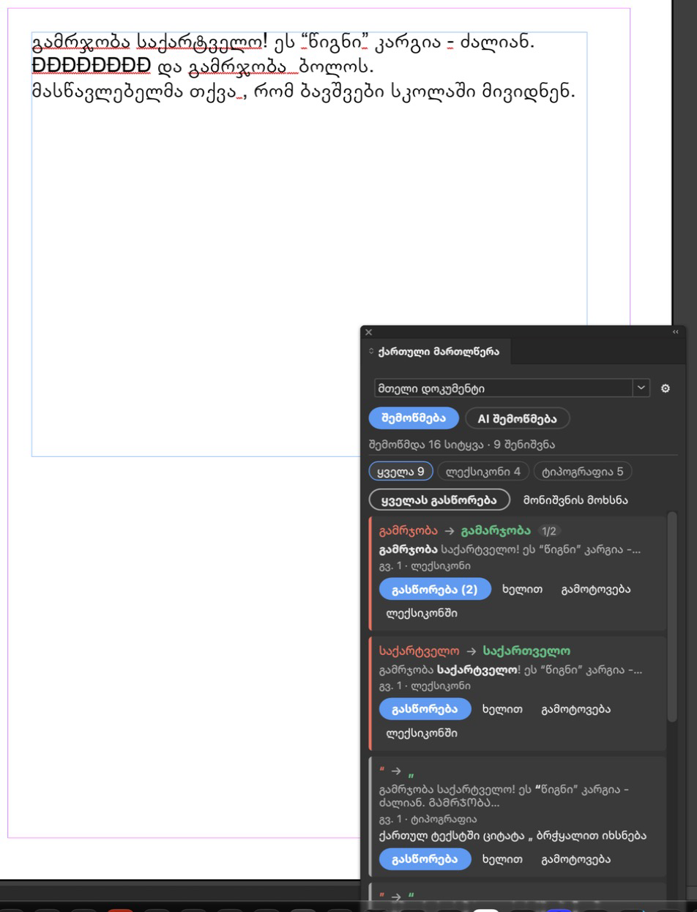

Georgian spell check for Adobe InDesign
Find spelling and typography mistakes in Georgian text, see them underlined on the page, and fix them with one click. Every fix can be undone.
How to install
Features
Offline dictionary
A Georgian Hunspell dictionary checks 50,000 words in about a second. No internet needed.
Georgian typography
Converts "…" and “…” to „…“, removes extra spaces, and replaces a hyphen between spaces with a dash.
One-click fixes
Fix one place, every occurrence of the same mistake, or all at once. One Undo reverts the whole fix.
Marks on the page
Errors get a red wavy underline in the document. The marks do not print and do not export to PDF.
Optional AI check
Anthropic Claude finds word-form, grammar and punctuation errors, with a short explanation for each.
Personal dictionary
Add names and terms once. Import and export the list as a text file.
What it checks
- The whole document, the current story, or only the selected text, including tables and footnotes.
- Modern Georgian (Mkhedruli), also in all caps (Mtavruli).
- Interface in English and Georgian.
Install
- Open the Creative Cloud desktop app and go to Stock & Marketplace → Plugins.
- Search for Georgian Spell Check and click Get.
- In InDesign, open Plug-Ins → Georgian Spell Check.
Requires Adobe InDesign 2023 (18.5) or later.
How to use
- Choose what to check: whole document, current story, or selected text.
- Click Check for the dictionary and typography check (free, offline), or AI check to add the AI check.
- Click a result to jump to it in the document.
- Click Fix, pick another suggestion, type your own with Edit, or choose Ignore / Add to dictionary.
- Fix all fixes every visible result after you confirm. Use Edit → Undo (⌘Z / Ctrl+Z) to revert it in one step.
AI check
The AI check is optional. It uses Anthropic's Claude models with your own Anthropic API key, which you enter in the plugin settings. Anthropic bills the usage to your account; the panel shows the cost of each check. Paragraphs are sent to Anthropic only when you click AI check. The dictionary and typography checks work without a key and never send text anywhere. See the privacy policy.
Support
Questions, bug reports or words the dictionary is missing: wermichelle@gmail.com.
Credits
Georgian dictionary: ka_GE.spell by Gabriel Margiani (MIT), built from GeoWordsDatabase by Dato Bumbeishvili (MIT) and Crúbadán by Kevin Scannell (CC BY 4.0). Spelling engine: nspell (MIT).